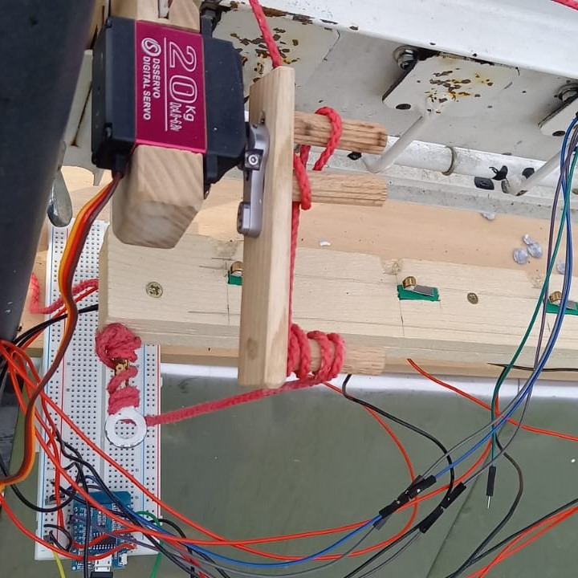

Automatische Scheibenanlage
Funktionsweise
Das Grundprinzip der Automatischen Scheibenanlage ist das Registrieren von Treffer und Fehler, als auch die dafür benötigten Zeit. Diese Daten können per Website ausgelesen und analysiert werden.
Die Hardware besteht aus einer klassischen Luftgewehr-Schießanlage, welche mit fünf Taster, zur Treffererkennung, und einem Beschleunigungssensor, zur Fehlererkennung, ausgestattet ist.
Die Taster sind über eine eine Holzlatte, mit Einkerbungen, an dem Schießstand befestigt. Wenn eine Platte umfällt, registriert der zugehörige Taster, dass er für kurze Zeit gedrückt wurde. Dieses Prinzip ist die Grundlage für die Erkennungen eines Treffers
Wenn bei einer Erschütterung beinahe Zeitgleich ein treffer erkannt wird, wird der Treffer bevorzugt gewertet. Denn bei einem Randtreffer oder in gewissen Außnahmen wird bei einem Treffer die Platte genauso stark erschüttert als bei einem Fehler.
Die Kommunikation findet über das I2C Kommunikationsprotokoll statt und wird über die "Wire.h" Library abgewicklt. Zum auslesen der Daten werden spezifische Register des Speichers auf dem Beschleunigungssensor ausgelesen.
Im Abständen von 8 ms wird im Code der Zustand des Sensors ausgelesen. Durch ein Vergleichen von aufeinanderfolgenden Werten, wird die Erschütterunf ermittelt.
Wie auf dem Bild zu erkennen ist ist ein Servo für das aufstellen der Platten verantwortlich. Dieser "zieht" an der bereits vorhandenen Aufstellschnur um die Platten aufzustellen.
Der Servo besitzt wegen der hohen Gewichts der Klappen ein sehr hohes drehmoment von ca. 0.2 Nm. Daher benötigt es eine separate Spannungsversorgung, weil der Strom des Wemos D1 mini nicht ausreicht.
Im Code wird der Servo über die "Servo.h" library angesteuert. 
Der Server verarbeitet die Schussdaten und schreibt diese in eine json Datei, welche als Datenbank fungiert.
Diese Daten werden über einen httpRequest von der Webseite abgefragt und über die Library Chart.js visuell dargestellt. Im bereich Ergebnisse werden einfache HTML-Elemente zur anzeige der Daten benutzt.